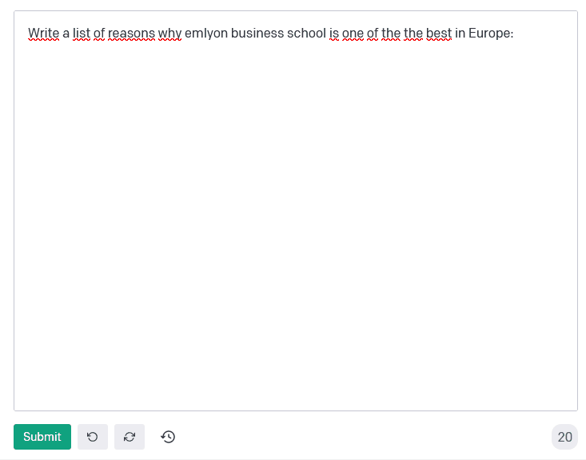

Paris Hilton was visiting Paris. She was interested in books by Jack London, who has written a book about hobboes in London.
A primer on text mining for business
2017-12-08
last modified: 2022-10-14
== !
1. Definitions
"Text mining" refers to using computational methods to find interesting information in texts.
Quasi synonyms:
natural language processing (abbreviated in NLP)
→ "Natural language" insists on the fact that we deal with "human language" (possibly with slang, grammar and spelling errors, etc.)
→ not "programming language"
computational linguistics (name of a scientific discipline)
→ this expression shows that of course, text mining is practised by computer scientists but linguists as well. Some approaches to text mining put a heavy emphasis on grammatical notions (structure of sentences etc.), while other methods ignore grammar and syntax completly and still get good results.
A "corpus" is a collection of documents. The plural form exists: corpora. So data scientists doing text mining refer to their "dataset" or "corpus".
2. What kind of text?
Books
Tweets
Product reviews on Amazon
LinkedIn profiles
The whole Wikipedia
Free text answers in the results of a survey
Tenders, contracts, laws, …
Print and online media
Archival material
The list above is to convey that "text" is virtually everywhere, and as obvious as it seems we should not forget about this diversity of sources.
3. What can be done with text mining?
a. Sentiment analysis
Sentiment analysis, also called opinion mining or sentiment detection.
Is this piece of text of a positive or negative tone? This type of text mining is useful to filter a large number of documents and retain only those that need action (eg, addressing negative comments).
Companies are typically interested in sentiment analysis in conjuction with topic modeling: they need to identify which topic elates negative sentiments.
For a review of methods for sentiment analysis, see this review article.
b. Topic modeling / topic detection
This type of tool aims at discovering the main topic or the multiple topics of a corpus. This is an essential function for:
exploratory analysis: what is this corpus about?
categorization: is this document about this or that?
detection / monitoring: send an alert when a document matching this topic is published
etc.
c. Semantic disambiguation and Named Entity Recognition
How can a software "understand" the difference between "Paris Hilton" and "Hilton Hotel, in Paris"?
Named Entity Recognition (NER) consists in matching an expression with the proper definition, given the context of use. Clever techniques and data sources (like DBPedia) are used to achieve good results.
Semantic disambiguation or "Word sense disambiguation" consists in finding the meaning of an expression when multiple meanings are possible.
d. Automated translation / live translation
See Google translate but also the Skype Translator.
e. Summarizing
Shortening a text while keeping its core message intact. See this reference for a short, technical review.
4. Ok, amaze me
a. Named Entity Recognition
A demo for Named Entity Recognition (the demo is for a service delivered as an API):
On the website above, try first:
Then:
London is bigger than Paris
b. A demo of sentiment analysis by a research team at Stanford:
Visit this page and try writing a sentence with a negative or positive emotion / sentiment:
c. Translation - of an excellent quality
from any language to any language
of a professional quality
5. Frontier of text mining: what works, what is hard, what does not work.
a. What works: Profiling of individuals on psycho / political / social dimensions
The current state of text mining makes it easy to profile individuals, based on the texts they write on social networks.
Without text mining, we have access to “external”, “cold” states of the individual:
behavior (eg, clicks on websites, purchases, subscriptions)
sociodemo attributes (address, gender)
social networks (but relatively cold ones)
With text mining, there is access to “internal”, “hot” cognitive states of individuals:
opinions
intentions
preferences
degree of consensus
social networks (who mentions whom: how, in which context)
implicit and very private attributes of the author (eg, sexual orientation)
See these following studies:
See this article in the New York Times examining the role of Cambridge Analytica in profiling voters at the service of Donal Trump’s campaign in 2016:
These text mining techniques get even more precise when mixed with network analysis and machine learning.
b. Printed form (or even pdf) is hard
Printed text is typically harder and slower to analyze, because it needs to be scanned first (the technical term is OCR). The process of OCR introduces errors.
Check this paper in the Digital Humanities Quarterly for a deeper look into this issue, in the context of historical research.
And even when the text is in a digital form, it can be hard to use: extracting text from a pdf is not trivial at all, and this is part of the toolchain of data science.
c. Multilingual
Many operations in text mining will break when the language changes.
For example, the German language capitalizes nouns. It can be confusing to an algorithm trained on a corpus in English where only names are capitalized: simple nouns could be tagged as first names or family names.
This is just one of many examples. Text mining applications often break, are less efficient and / or are more costly when they handle multiple languages.
d. Very informal / colloquial speech
Text mining applications will have a relatively easy time on text published by Reuters news, because it is written in a formal style.
It will have a harder time on a Facebook message written by a teenager, peppered with slang, emojis and spelling shortcuts.
e. Detection of irony and sarcasm: progresses but not there yet
This project tries to crack the challenge of detecting irony in short texts: http://deepmoji.mit.edu/
Not working perfectly. Irony is hard because it needs contextual knowledge to guess that the real meaning is different from the literal meaning.
f. Robust translation
Translation remains very imperfect.
Translation has been mostly solved for the most spoken languages.
g. Reasoning beyond Q&As
IBM Watson is a software which beat human players at the TV Game "Geopardy" (and that was in 2011)
Yet, mining text to produce new "reasoning" in general situations by machines has not made much progress yet until 2019.
In 2019, language models using self supervised learning achieved unheard levels of precision for the generation of text.

Figure 1. An example of text generation with GPT3
6. Basic operations in text mining - essential vocabulary
a. Tokenization
Tokenization is finding terms in a sentence. For example, "I am Dutch" is tokenized into "I", "am", "Dutch".
Trivial? Not so much. Try tokenizing a sentence in Mandarin!
b. Stemming
With stemming, “liked” and “like” will be reduced to their stem “lik” to facilitate further operations
c. Lemmatizing
With lemmatizing, “liked”, “like” and “likes” will be grouped to count them as one basic semantic unit
d. Part-of-Speech tagging (aka POS tagging)
POS detects the grammatical function of the terms used in a sentence, to facilitate translation or other tasks.
See for example the online demo by the Stanford team shown above: POS tagging is used to decompose the sentence.
e. Bag-of-words model
“Starting the text analysis with a bag-of-words model” means just listing and counting all different words in the text, without caring for the sequence of the words in the text, as a first approach.
f. N-grams
The text “I am Dutch” is made of 3 words: I, am, Dutch.
But it can also be interesting to look at bigrams in the text: “I am”, “am Dutch”. Or trigrams: “I am Dutch”.
N-Grams is the general approach of considering groups of n terms in a document.
This can reveal interesting things about frequent expressions used in the text.
A good example of how useful n-grams can be: visit the Ngram Viewer by Google: https://books.google.com/ngrams
7. Types of use of text mining for business
Three types of use:
for market facing activities
for business management
for business development
a. for market facing activities
Refined scoring: propensity scores (including churn), scoring of prospects
Refined individualization of campaigns: personalized ads, email campaigns, coupons, etc.
Better community management: getting a clear and precise picture of how customers and prospects perceive, talk about, and engage with your brand / product / industry
b. for business management
Organizational mapping: getting a view of the organization through text flows.
Example: getting a view on the activity of a business school through a map of its scientific publications.
HRM: finding talents in niche industries, based on the mining of profiles
Marketing research: refined segmentation + targeting + positioning, measuring customer satisfaction, perceptual mapping.
c. for business development
Developing adjunct services:
product recommendation systems (eg, Amazon’s)
detection and matching of needs (eg, detection of complaints / mood changes)
product enhancements (eg, content enrichment through localization/personalization)
Developing new products entirely, based on
different search engines
innovative alert systems / automated systems based on smart monitoring of textual input
knowledge databases
new forms of content curation / high value info creation + delivery
The end
Find references for this lesson, and other lessons, here.
 This course is developed by Clement Levallois.
This course is developed by Clement Levallois.
Discover my other courses in data / tech for business: https://www.clementlevallois.net
Or get in touch via Twitter: seinecle
m/seinecle[seinecle]
m/seinecle[seinecle]
m/seinecle[seinecle]
m/seinecle[seinecle]
m/seinecle[seinecle]
m/seinecle[seinecle]
m/seinecle[seinecle]
/www.twitter.com/seinecle[seinecle]
m/seinecle[seinecle]
m/seinecle[seinecle]
m/seinecle[seinecle]